 HDSHD
HDSHD
2015 • 2 sa 24 dk
HDSHD
2015 • 2 sa 24 dk
Bilim Kurgu, Süper Kahraman, Aksiyon-Macera
Tony Stark etkin olmayan barış koruyucu bir programı çalıştırınca,
işler ters gider böylece Yenilmezler gezegeni hain Ultron'dan
kurtarmak için çarpışırken zorlu bir sınavdan geçerler.